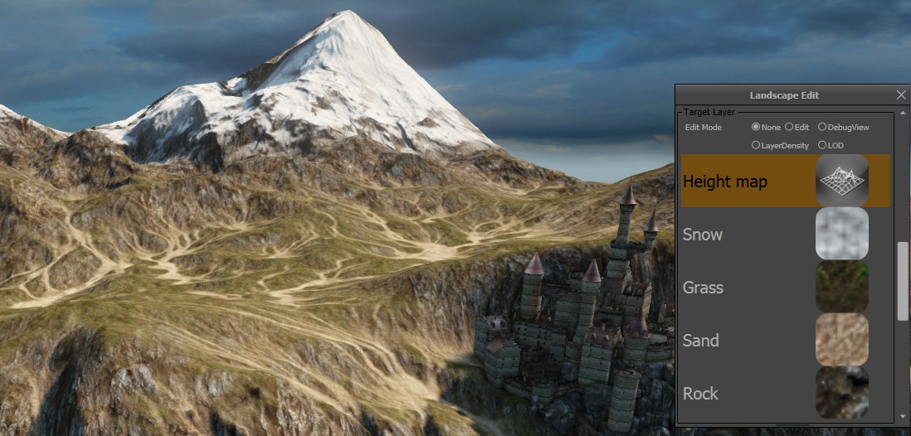
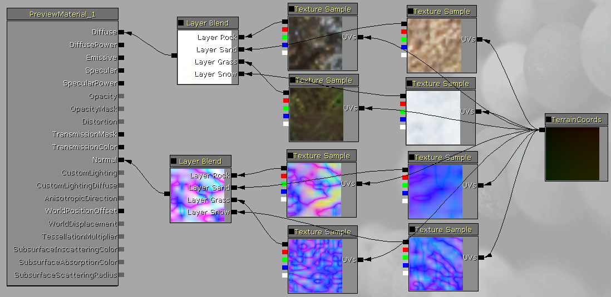
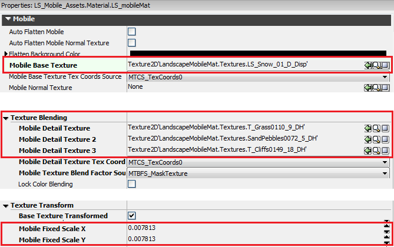
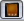

UDN
Search public documentation:
MobileLandscapeCH
English Translation
日本語訳
한국어
Interested in the Unreal Engine?
Visit the Unreal Technology site.
Looking for jobs and company info?
Check out the Epic games site.
Questions about support via UDN?
Contact the UDN Staff
日本語訳
한국어
Interested in the Unreal Engine?
Visit the Unreal Technology site.
Looking for jobs and company info?
Check out the Epic games site.
Questions about support via UDN?
Contact the UDN Staff
移动平台景观
概述
移动平台景观材质


普通层混合
为了在移动平台上设置相同的材质，首先您需要正确设置材质的使用标识。 确保 Use With Landscape（使用景观） 和 Use With Mobile Landscape（使用移动平台景观） 都被勾选。 其次，您需要为每层定义贴图。 每层贴图都应该按照它们出现在景观编辑模式窗口的顺序来定义。 或者，您可以将层列出在 Mobile Landscape Layer Names（移动平台景观层名称） 属性中使用。 在这个例子中，顺序为雪，草，沙和石。
其次，您需要为每层定义贴图。 每层贴图都应该按照它们出现在景观编辑模式窗口的顺序来定义。 或者，您可以将层列出在 Mobile Landscape Layer Names（移动平台景观层名称） 属性中使用。 在这个例子中，顺序为雪，草，沙和石。
 第一层在 Mobile Base Texture（移动平台基础贴图） 属性中定义。 后续层在 Mobile Detail Texture（移动平台细节贴图） ， Mobile Detail Texture 2（移动平台细节贴图2） 和 Mobile Detail Texture 3（移动平台细节贴图3） 插槽的贴图混合部分中定义。
如果您需要，最终您可以为贴图定义UV缩放比例，在贴图转换部分。
第一层在 Mobile Base Texture（移动平台基础贴图） 属性中定义。 后续层在 Mobile Detail Texture（移动平台细节贴图） ， Mobile Detail Texture 2（移动平台细节贴图2） 和 Mobile Detail Texture 3（移动平台细节贴图3） 插槽的贴图混合部分中定义。
如果您需要，最终您可以为贴图定义UV缩放比例，在贴图转换部分。

当您设置好材质后，您可以点击模拟移动特性按钮
并且您应该看到层混合，正如其在移动设备上出现的一样。 您也可以点击模拟平台预览器按钮
单色层混合
将4层贴图组合到单个贴图也是可以的，只要分别把各贴图的单色版本存储在R,G,B和A通道即可。 您可以定义4种RGB颜色值来在混合前供每层着色使用。 例如，您可以为雪定义八色，为草定义绿色以及为岩石层定义棕色。 这样做会没办法在每层设置很多颜色变量，但它会简化混合，因为只有权重贴图和单层贴图被使用。 这可以极大地增强表现，特别是低端设备上的表现。 为启用这个特性，选中 Use Mobile Landscape Monochrome Layer Blending （使用移动平台景观单色层混合） 然后在 Mobile Landscape Monochrome Layer Colors （移动平台景观单色层颜色）属性中定义每层的颜色值： 最后您需要导入您的混合层贴图并在 Mobile Base Texture （移动平台基础贴图）属性中引用它。 Mobile Detail Texture （移动平台细节贴图）属性应该为空。
最后您需要导入您的混合层贴图并在 Mobile Base Texture （移动平台基础贴图）属性中引用它。 Mobile Detail Texture （移动平台细节贴图）属性应该为空。
性能和内存
组件尺寸
限制描画调用的数量及三角形的数量对移动设备很重要。 描画调用的数量取决于景观组件的数量，以及组件尺寸和决定三角形数量和LOD变化多快发生的子部分的数量。 我们发现使用尺寸为1009x1009的景观及126x126方形组件 （63x63方形的2x2子部分）是很好的在三角形数量和LOD变换间的折中方法。 要获得更多有关组件尺寸的信息，请查看 创建景观 页面。移动平台LOD偏移
有两种设置可被用来减少移动平台上的景观渲染所需的三角形数。 首先是景观actor的 MobileLodBias 属性。 这个数字的每个增量都会在所有移动平台上对每个组件尺寸减少1 mip等级。 比如，如果你为2x2子项,63x63方形景观设置MobileLodBias=1，高度图的最大mip数据在烘焙时会被丢弃，从而把分辨率降低到2x2, 31x31方形的景观。 启用模拟移动平台特性按钮将会在降低的分辨率中显示景观。 第二个设置是 BaseSystemSettings.ini 的 MobileLandscapeLodBias 。 这个值和MobileLodBias属性一样，但是会有基于特别设备的启动时的额外偏移。 例如，对于第4代iPod Touch设备的默认偏移是1，这意味着与iPhone 4S相比，它将会使用一半分辨率的高度图，渲染的三角形数量为四分之一。 您可以按要求为您的游戏调整这些设置。- 注意MobileLandscapeLodBias并不会减少内存使用峰值，因为完整的分辨率数据直到渲染数据初始化后才会被丢弃，但不会在关卡被载入后减少内存使用。
内存使用情况
在电脑上，我们使用顶点贴图来高效的储存高度和法线数据并很容易地计算LOD变换。 在移动平台上，我们使用固定的顶点和索引缓冲。 因此，在移动平台上的内存使用增加了。| PC | Mobile | |
|---|---|---|
| 位置数据 | 每顶点每LOD 2字节 | 每顶点每LOD 8字节 |
| 法线数据 | 每顶点每LOD 2字节 | 每顶点每LOD 4字节 |
| 碰撞数据 | 每顶点4字节 | 每顶点4字节 |
| 层数据（4层） | 每顶点4字节 | 每顶点4字节 |
统计数据
STAT LANDSCAPE (景观统计）命令行将会在视图中为景观显示三角形数量和描画调用数量。限制
- 对景观洞的渲染尚未被支持。
- LOD是严格的基于距离的，固定LOD或变更LOD因数的组件不被支持，因为只有两个LOD关卡能被用于顶点着色器。
- 当 按钮按下时，模拟移动特性的景观编辑不可用 进入景观编辑模式将可以切换模拟移动特性键（如果按下的话）。
- 大于128x128的顶点的组件尺寸不被支持，比如带2x2子部分的127x127方块。 更大的组件尺寸会在顶点缓冲器中需要多于65536个顶点，而这将会造成16位的索引值溢出。 尝试使用更大尺寸将会造成渲染崩溃。 在这种情况下，设置MobileLodBias=1将能解决问题，因为它降低了组件中的顶点数量。